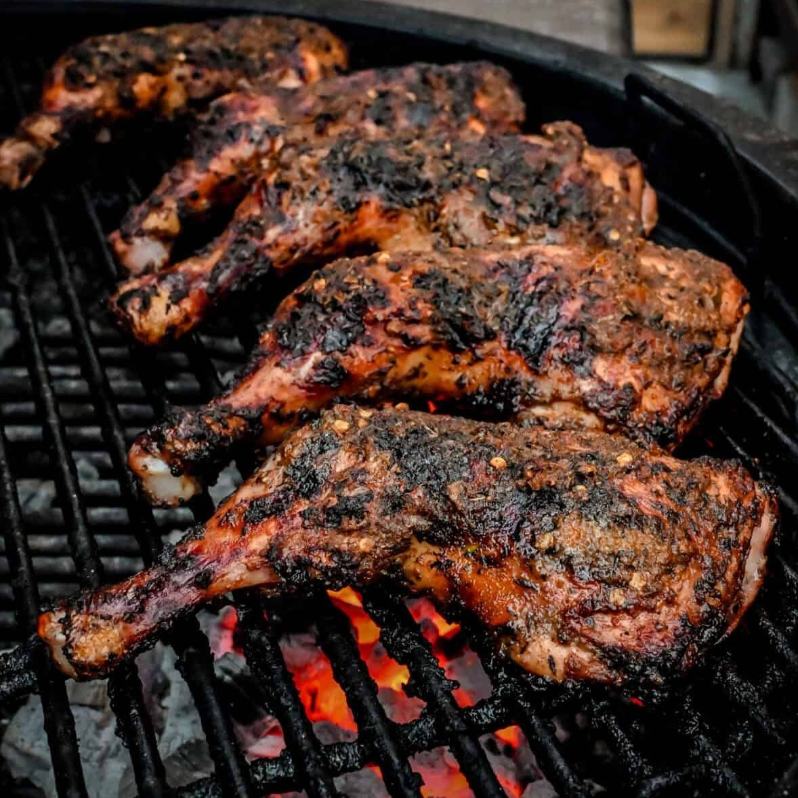

Jerk Chicken is arguably Jamaica's most iconic dish; today it is universally associated with my tiny island to the extent that has taken on a cultural identity of it's own. All across the world, in almost every major population center, you might be able to find something labelled as "Jerk." To my chagrin, the vast majority of time, the term "Jerk" is haphazardly thrown on whatever dish that has a vague resemblance to it's iconic namesake. Sadly, the term "Jerk" has been diluted to mean "cooked with a blended assortment of whatever caribbean esc herbs and spices is available at the time." Anything from "Oven Jerk," to "Jerk Pasta" to "Jerk Pizza" is an affront to true, authentic Jamaican Jerk Chicken. Traditionally, Jerk is made from marinating Chicken, Pork, Rabbit or Fish in a blend of Authentic Caribbean Spices and cooked over an Open Flame; typically a converted steel drum, but any open flame can work in a pinch. True Jerk is a process, a labour of love, not a list of ingredients. Jerk has to be marinated. Jerk has to be over an open flame. Jerk has to be smoked. Jerk has to feature strong traditional flavours such as Pimento, Scotch Bonnet, Scallions, Onion, Thyme, etc. I don't care if your grandma makes the best "Jerk Tofu" and the only thing caribbean on the plate is some fried plantains. That isn't Jerk, argue with her. I don't care that your favorite cheat meal is jerk pizza if the only thing separating it from Naples' finest is some stringy chicken breast tossed in "Jerk Sauce." That is not Jerk, take it up with the Lord.